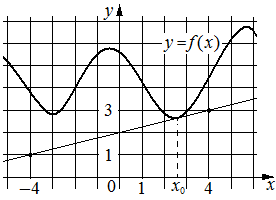

Авторский разбор и аудит предварительны; внешней экспертизы нет.
Модель автора: claude-opus-5-5 (opus; effort=low); в основных частотах: True ·
Впишите правильный ответ.
На рисунке изображены график функции и касательная к нему
в точке с абсциссой Найдите значение производной функции
в точке

КЭС: 4.1 Производная функции. Производные элементарных функций; 4.2 Применение производной к исследованию функций на монотонность и экстремумы. Нахождение наибольшего и наименьшего значения функции на отрезке
0,25
| ID / вход | Действие | Результат | Локальные KC |
|---|---|---|---|
| s1 · condition | Считать с рисунка координаты двух точек касательной, лежащих в узлах сетки | (-4; 1) и (4; 3) | kc1 |
| s2 · s1 | Вычислить угловой коэффициент касательной по двум точкам | k = (3-1)/(4-(-4)) = 0,25 | kc2 |
| s3 · s2, condition | Применить геометрический смысл производной: f'(x0) равна угловому коэффициенту касательной в x0 | f'(x0) = 0,25 | kc3 |
[
{
"id": "m1",
"name": "Производная через угловой коэффициент касательной по двум узловым точкам",
"step_ids": [
"s1",
"s2",
"s3"
]
}
]Вход: изображение прямой на клетчатой сетке. Операция: найти точки прямой, лежащие в узлах сетки, и записать их координаты. Граница: только точки, однозначно читаемые с рисунка.
{
"local_kc_id": "kc1",
"status": "match",
"catalog_kc_id": "graph_coordinates",
"evidence": [
{
"ref": "step:s1:action",
"quote": "Считать с рисунка координаты двух точек касательной, лежащих в узлах сетки"
},
{
"ref": "step:s1:result",
"quote": "(-4; 1) и (4; 3)"
},
{
"ref": "image:assets/9bcfc740a3f25cc32868845d.png",
"region_description": "На прямой-касательной отмечены две жирные точки: слева над делением -4 на высоте деления 1, справа над делением 4 на высоте деления 3; сетка с единичным шагом, подписи осей 0, 1, 4, -4, 1, 3."
}
],
"context_refs": [
"image:assets/9bcfc740a3f25cc32868845d.png"
],
"alternatives_checked": [
{
"catalog_kc_id": "literal_9aee0783618d",
"reason": "Это чтение знака производной по графику производной, а не координат точек."
}
],
"rationale": "Операция — считывание координат отмеченных точек прямой по установленному масштабу сетки; точки явно отмечены на рисунке, что соответствует определению graph_coordinates целиком. Восстановление формулы не выполняется.",
"proposal": null,
"blocking": false,
"issue_ids": []
}Вход: координаты двух различных точек невертикальной прямой. Операция: k = (y2-y1)/(x2-x1). Граница: x1 ≠ x2.
{
"local_kc_id": "kc2",
"status": "new_candidate",
"catalog_kc_id": null,
"evidence": [
{
"ref": "step:s2:action",
"quote": "Вычислить угловой коэффициент касательной по двум точкам"
},
{
"ref": "step:s2:result",
"quote": "k = (3-1)/(4-(-4)) = 0,25"
}
],
"context_refs": [
"step:s1:result"
],
"alternatives_checked": [
{
"catalog_kc_id": "literal_f253b50b98a1",
"reason": "Требует найти оба коэффициента k и b уравнения y=kx+b; в решении найден только k, свободный член не нужен и не вычисляется — это лишь компонент узла."
},
{
"catalog_kc_id": "direct_proportion",
"reason": "Касается y=kx по одной точке; касательная не проходит через начало координат."
}
],
"rationale": "Наблюдается вычисление углового коэффициента невертикальной прямой как отношения приращений по двум точкам с разными абсциссами. Ближайший узел шире (полное восстановление линейной функции), поэтому match не ставится.",
"proposal": {
"name": "Вычислять угловой коэффициент прямой по двум точкам",
"definition": "Для двух точек невертикальной прямой с x1≠x2 найти k=(y2−y1)/(x2−x1); нахождение свободного члена и уравнения прямой не входит."
},
"blocking": false,
"issue_ids": []
}Вход: касательная к графику дифференцируемой функции в точке x0 и её угловой коэффициент. Операция: f'(x0) = k. Граница: касательная невертикальна, проведена именно в точке x0.
{
"local_kc_id": "kc3",
"status": "new_candidate",
"catalog_kc_id": null,
"evidence": [
{
"ref": "step:s3:action",
"quote": "Применить геометрический смысл производной: f'(x0) равна угловому коэффициенту касательной в x0"
},
{
"ref": "step:s3:result",
"quote": "f'(x0) = 0,25"
}
],
"context_refs": [
"condition",
"step:s2:result"
],
"alternatives_checked": [
{
"catalog_kc_id": "literal_9aee0783618d",
"reason": "Чтение знака производной по графику производной; здесь дан график функции и касательная, нужен числовой вывод f'(x0)=k."
},
{
"catalog_kc_id": "stationary_point",
"reason": "Связан с нулём производной, а не с угловым коэффициентом касательной."
}
],
"rationale": "Действие — отождествление значения производной в точке касания с угловым коэффициентом невертикальной касательной. В каталоге нет узла о геометрическом смысле производной.",
"proposal": {
"name": "Отождествлять значение производной с угловым коэффициентом касательной",
"definition": "Для невертикальной касательной к графику дифференцируемой функции в точке x0 использовать f'(x0)=k касательной."
},
"blocking": false,
"issue_ids": []
}[]
[]
{
"author_path": "data/annotation/runs/2026-11-07-fipi-team-bogdan108-051-150/raw/author/BA4FBA.json",
"auditor_path": "data/annotation/runs/2026-11-07-fipi-team-bogdan108-051-150/raw/auditor/BA4FBA.json",
"accepted_after_review": null
}